今天无意中听到一席中一位设计师讲对她影响最大的工业设计师是迪特·拉姆斯，我自己也对他的作品非常着迷。把手头上搜集到的一些相关资料都放在这里，不定期更新一下。
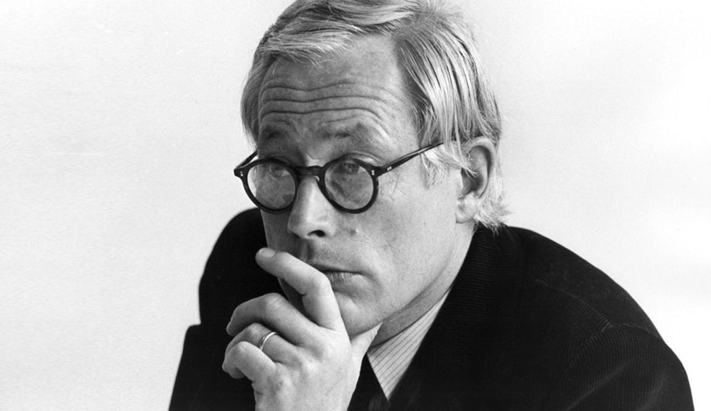
年轻时的Dieter Rams (Credit: Abisag Tullmann)
简介
迪特·拉姆斯（Dieter Rams，1932年5月20日－）是德国著名的工业设计师，出生于德国黑森邦威斯巴登市，与德国家电制造商百灵（博朗）和机能主义设计学派有很密切的关系。
自1943年至1957年，拉姆斯在威斯巴登工艺学校（Werkkunstschule Wiesbaden）攻读建筑与学习木工。1953年至1955年，他曾为建筑师奥图·阿培尔（Otto Apel）短暂地工作（和建筑很有渊源），随后便加入家电用品制造商百灵的设计部门，同时期建立起与乌尔姆造型学院的产学合作关系，1961年晋升为百灵首席设计师，一直到1995年仍留有这个头衔。
拉姆斯曾经阐述他的设计理念是“少，却更好”（Less, but better，德文：Weniger, aber besser），与现代主义建筑大师密司·凡·得罗的名言“少即是多（Less is more）”对比出有趣的意涵。他与他的设计团队为百灵设计出许多经典产品，包括著名的留声机SK-4（素有“白雪公主之棺”之昵称），和高品质的D系列幻灯片投影机D45、D46。他也为家具制造商Vitsœ设计606万用置物柜系统（1960年）而闻名。
他的许多设计，诸如咖啡机、计算机、收音机、视听设备、家电产品与办公产品，都成为世界各地博物馆的永久收藏，包括纽约的现代艺术博物馆。迪特·拉姆斯领导百灵的设计部门将近30年，直到他在1998年退休。
以上来自维基百科中文版迪特·拉姆斯词条。
设计十诫
拉姆斯提出的好的设计（gutes Design）应具备的十项原则广为流传，原文是德语版，后又有英语版和中文版。
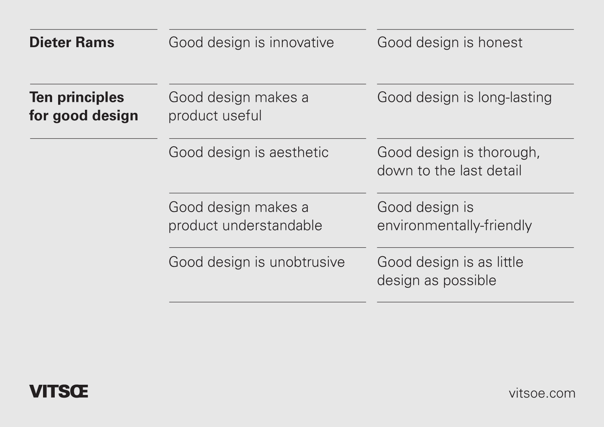
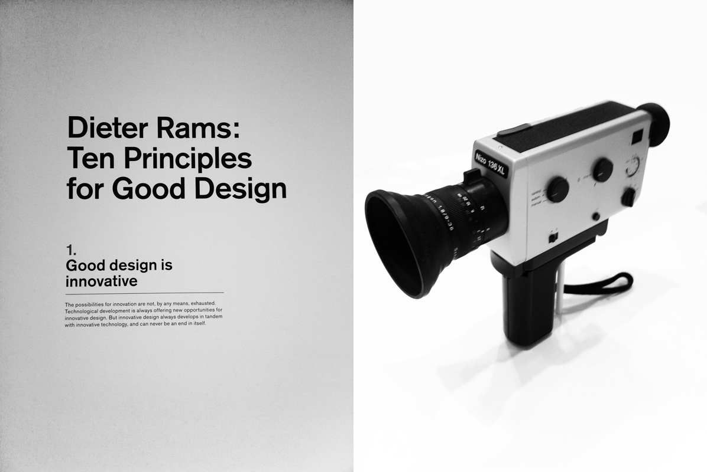
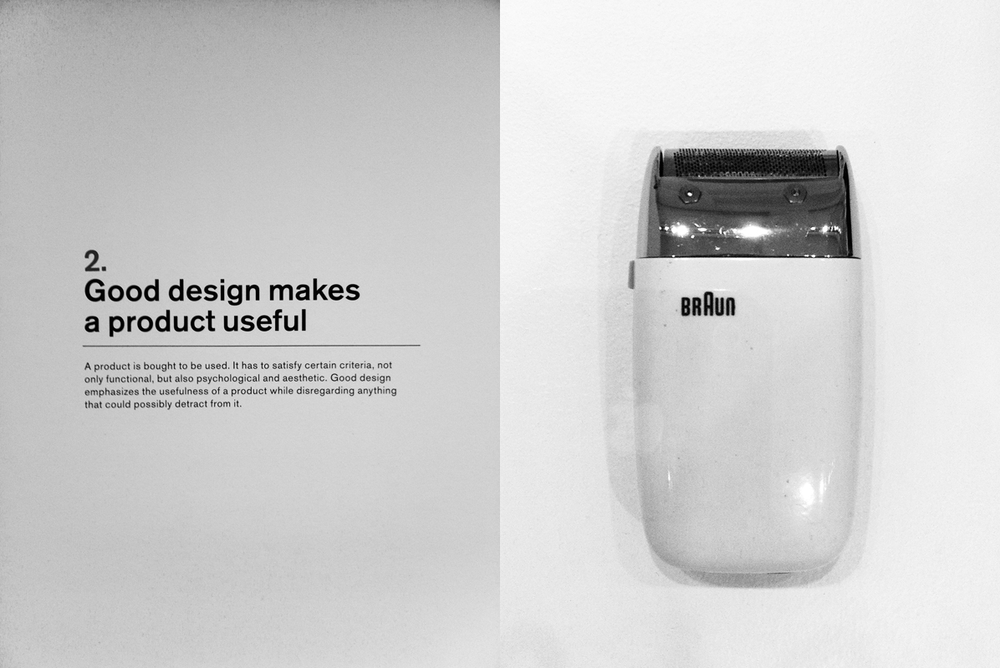
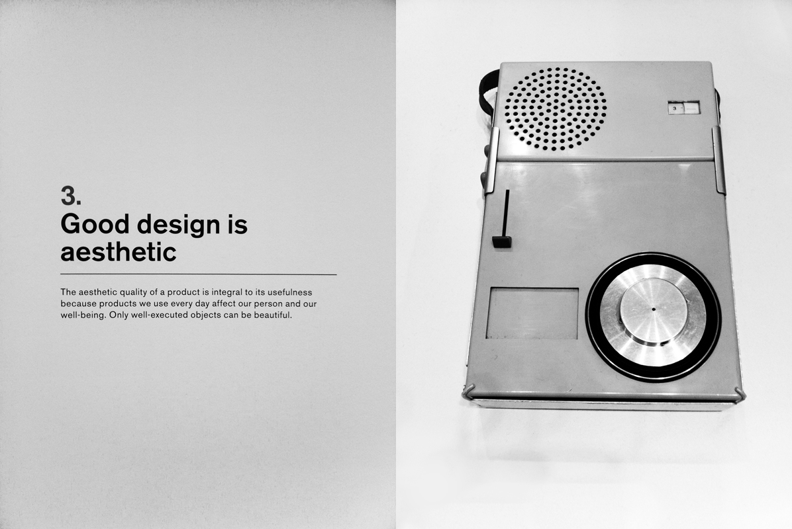
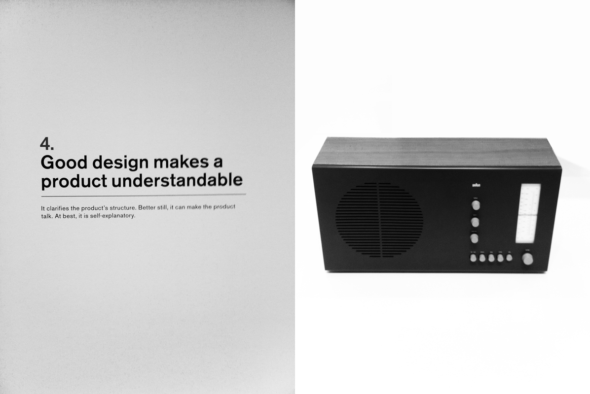
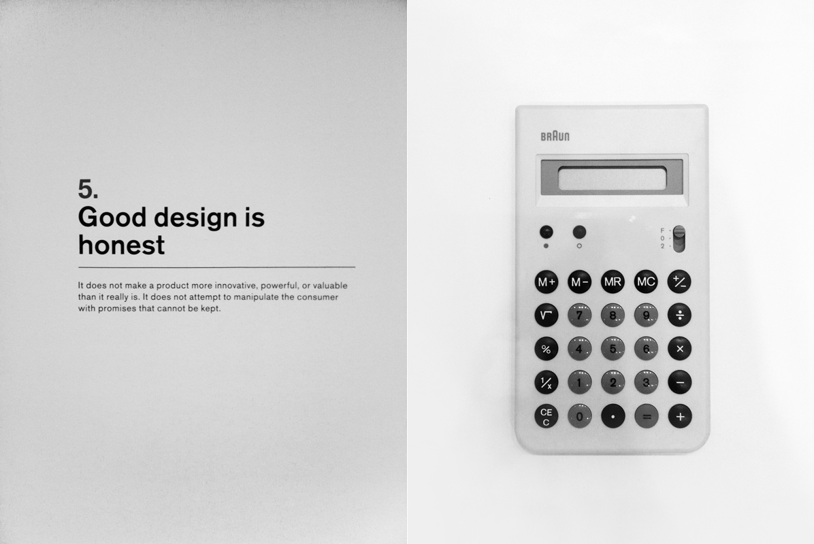
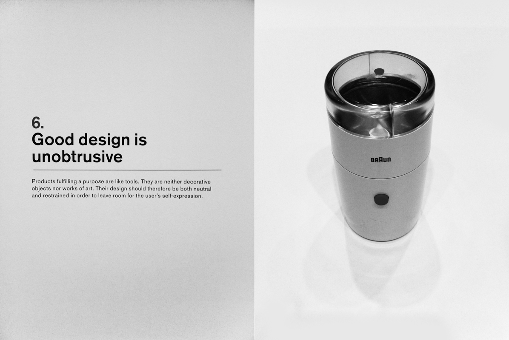
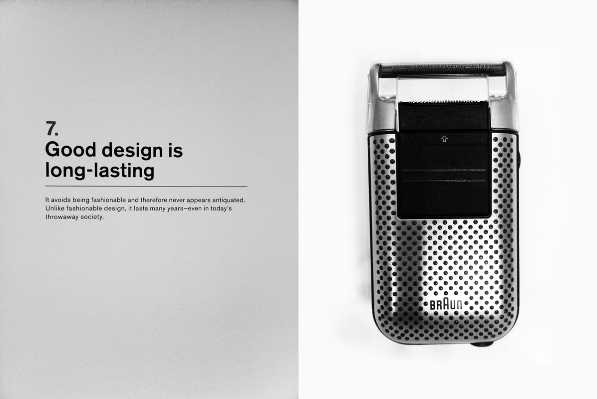
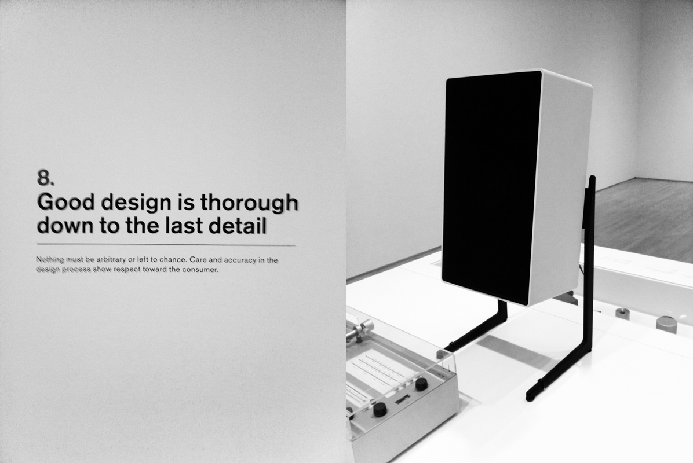
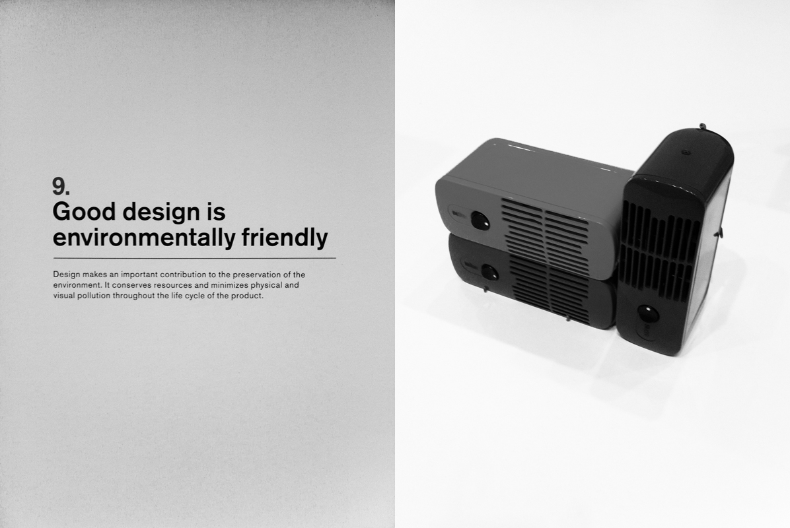
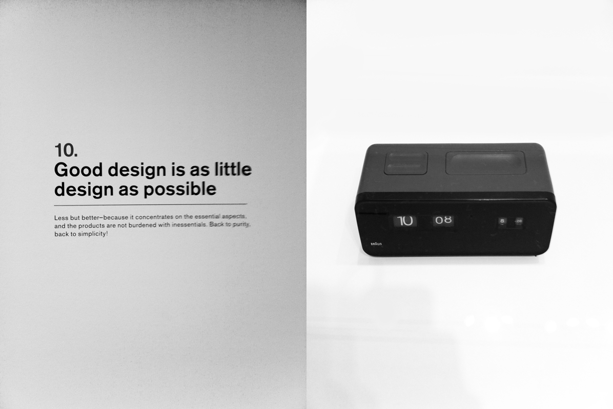
好的设计是创新的
创新的可能性还远没有被穷尽。技术的发展不断为设计理念提供新的起点，以提升产品可用性。但设计的革新总应与技术的革新相连，永远不要为了设计革新而革新。
Good design is innovative
Gutes Design ist innovativ
It does not copy existing product forms, nor does it produce any kind of novelty for the sake of it. The essence of innovation must be clearly seen in all functions of a product. The possibilities in this respect are by no means exhausted. Technological development keeps offering new chances for innovative solutions.
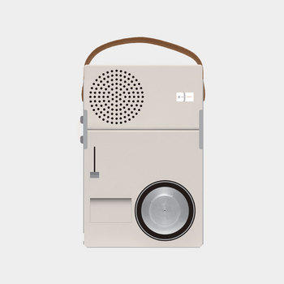
TP 1 收音机/唱机组合, 1959,Dieter Rams为布朗公司设计。
好的设计是实用的
产品是供人使用的，它应履行一定的功能——主要功能以及额外的心理和审美上的功能。好的设计是为了提升产品可用性，与此目的无关甚至相悖的一切都不应加以考虑。
Good Design makes a product useful
Gutes Design macht ein Produkt brauchbar
A product is bought in order to be used. It must serve a defined purpose – in both primary and additional functions. The most important task of design is to optimise the utility of a product.
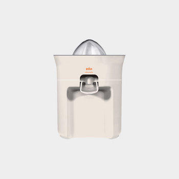
MPZ 21 multipress榨汁机, 1972,Dieter Rams and Jürgen Greubel为布朗公司设计。
好的设计是美的
产品的审美品质也是实用性的一部分，日常使用的器具影响着人们的生活环境和幸福感受。但只有真正优秀的产品才能是美的。
Good Design is aesthetic
Gutes Design ist ästhetisch
The aesthetic quality of a product – and the fascination it inspires – is an integral part of the its utility. Without doubt, it is uncomfortable and tiring to have to put up with products that are confusing, that get on your nerves, that you are unable to relate to. However, it has always been a hard task to argue about aesthetic quality, for two reasons.
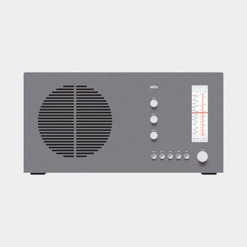
RT 20 tischsuper收音机, 1961,Dieter Rams为布朗公司设计。
好的设计使产品易于理解
设计应当以合理方式表明产品结构，让产品说话。最好的设计是自明的，它能够自己解释自己。
Good Design helps a product be understood
Gutes Design macht ein Produkt verständlich
It clarifies the structure of the product. Better still, it can make the product talk. At best, it is self-explanatory and saves you the long, tedious perusal of the operating manual.
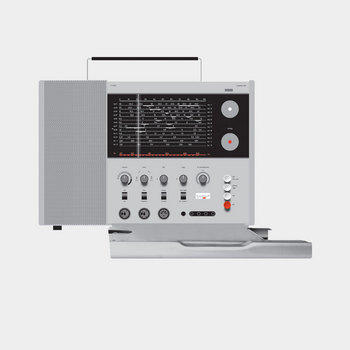
T 1000 收音机, 1963, Dieter Rams为布朗公司设计。
好的设计是谨慎克制的
履行某种功能的产品具有工具属性，它们既不是装饰物也不是艺术品。因此，它们的设计应该是中性的。器具应当隐退，为人的自我实现留出空间。
Good Design is unobtrusive
Gutes Design ist unaufdringlich
Products that satisfy this criterion are tools. They are neither decorative objects nor works of art. Their design should therefore be both neutral and restrained leaving room for the user’s self-expression.
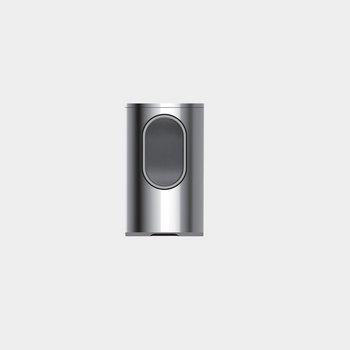
圆柱形T2打火机, 1968,Dieter Rams为布朗公司设计。
好的设计是诚实的
不要夸张产品本身的创意、功能和价值。也不要试图用实现不了的承诺去欺骗消费者。
Good Design is honest
Gutes Design ist ehrlich
An honestly-designed product must not claim features it does not have – being more innovative, more efficient, of higher value. It must not influence or manipulate buyers and users.

L 450 平板扬声器，TG 60开盘式录音机和TS 45控制器, 1962-64,Dieter Rams为布朗公司设计。
好的设计是经久永恒的
它避免迎合时尚，也因此不会过时。与短命的时尚设计形成鲜明对比，它即使在当今的一次性消费社会里也同样经久不衰。
Good Design is durable
Gutes Design ist langlebig
It is nothing trendy that might be out-of-date tomorrow. This is one of the major differences between well-designed products and trivial objects for a waste-producing society. Waste must no longer be tolerated.
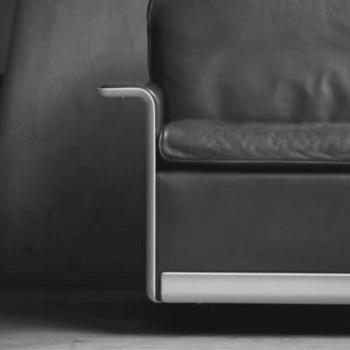
620椅子, 1962,Dieter Rams for为Vitsoe公司设计。
好的设计在极细微处也维持一致
任何细节都不能敷衍了事或者怀有侥幸心理。设计的逻辑性和准确性，最终都是表达对消费者的尊重。
Good Design is thorough to the last detail
Gutes Design ist konsequent bis ins letzte Detail
Thoroughness and accuracy of design are synonymous with the product and its functions, as seen through the eyes of the user.
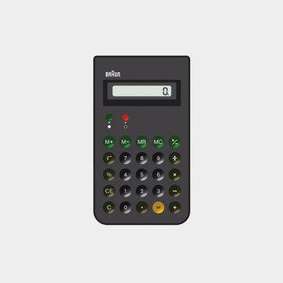
ET 66 计算器, 1987,Dietrich Lubs为布朗公司设计。
好的设计是环保的
设计能够为保护环境作出了重要贡献。让产品在整个生命周期内减少对资源的浪费，降低对自然的破坏并且不要产生视觉污染。
Good Design is concerned with environment
Gutes Design ist umweltfreundlich
Design must contribute towards a stable environment and a sensible use of raw materials. This means considering not only actual pollution, but also the visual pollution and destruction of our environment.
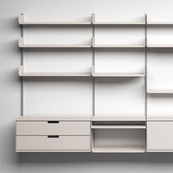
606 通用搁架, 1960,Dieter Rams为Vitsœ公司设计。
好的设计是简洁的
设计应当回归纯粹，回归简单。
“大道至简，平淡为归”
Good Design is as little design as possible
Gutes Design ist so wenig Design wie möglich
Back to purity, back to simplicity
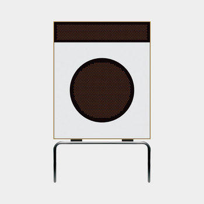
L 2扬声器, 1958,Dieter Rams为布朗公司设计。
…
以上文字整理自维基百科中文版[迪特·拉姆斯]词条和视觉中国网站。
再来看一个版本：
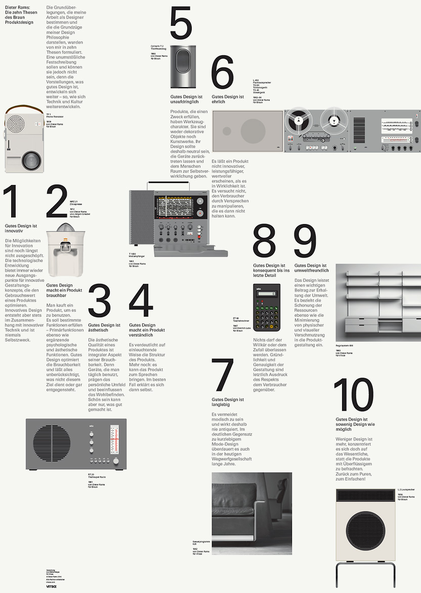
设计作品
拉姆斯的作品影响了包括苹果公司、无印良品在内的一代又一代的设计企业，突然发现荔枝FM的APP也从他的收音机设计中借鉴了一少。
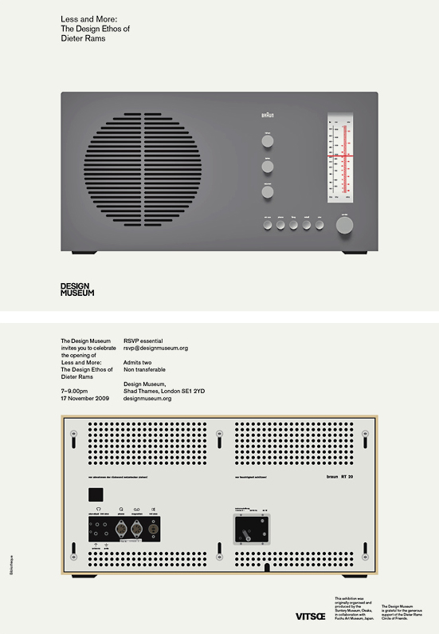
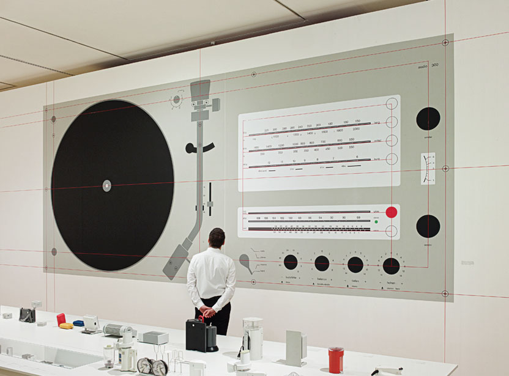
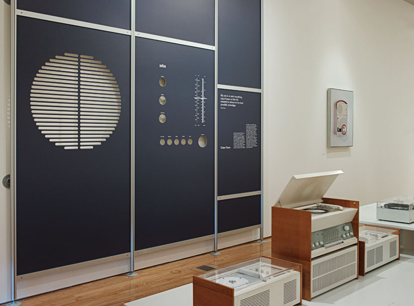
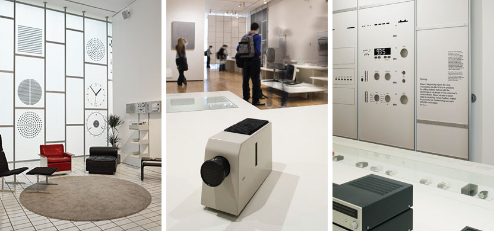
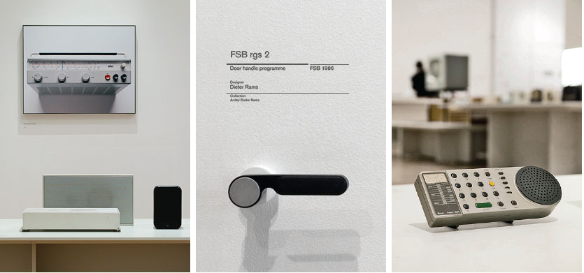
以上五张图片来自：http://www.bibliothequedesign.com/projects/exhibition-and-environment/design-museum-dieter-rams/
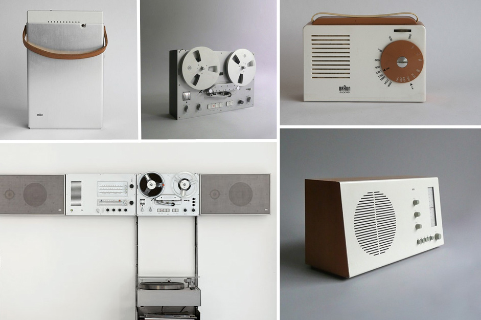
图片来自：http://www.awwwards.com/less-but-better-dieter-rams-s-influence-on-today-s-ui-design.html